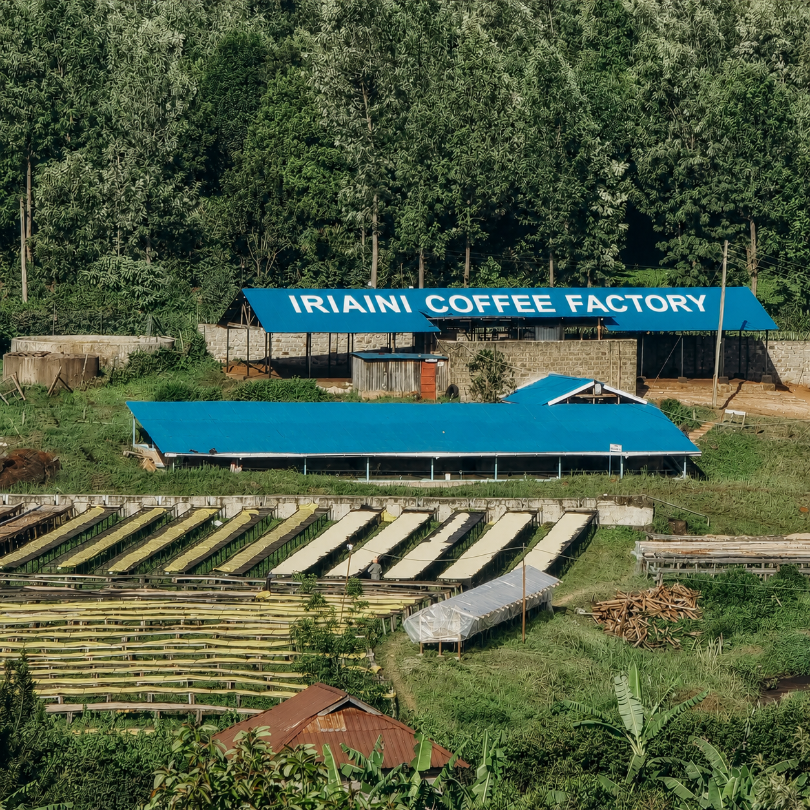

Discover the rich heritage of Iriaini Coffee Factory
Iriaini Coffee Factory has been a cornerstone of Kenyan coffee excellence for over two decades. We partner with local smallholder farmers in Nyeri County to deliver single-origin specialty coffee while practicing sustainable and ethical farming.
